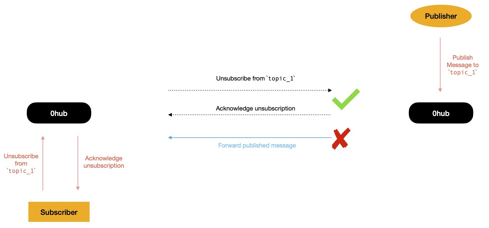
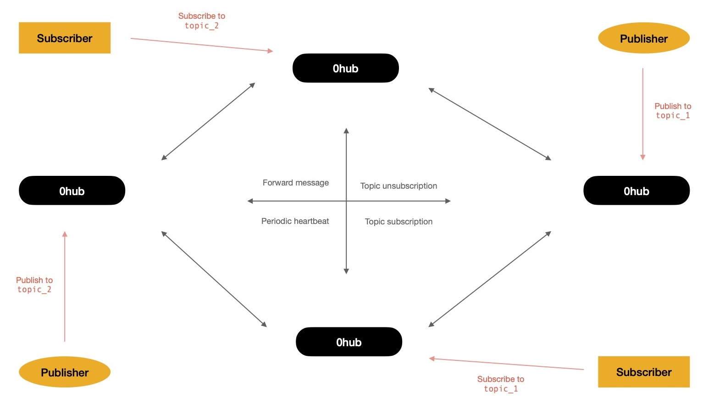
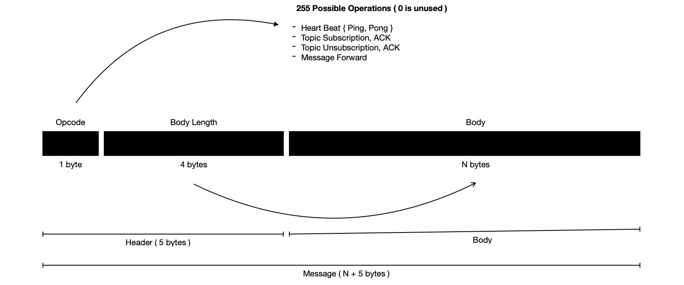

Sometime ago I started working on pub0sub - Fast, Light-weight, Ordered Pub/Sub
System --- built on top of async I/O, leveraging power of kernel event loop.
The main idea behind it was to write a software ( along with SDK ) which can be used for publishing arbitrary length messages to N-many
topics; subscribing to N-many topics -- listening for messages published on each of them; and last but not least
one powerful Pub/Sub Hub ( i.e. Router ) which will easily solve C10K by leveraging power of async I/O.
The aforementioned problem statement is solved, which is why I decided to update problem statement.
Now it looks like pub0sub - Distributed, Fast, Light-weight, Ordered Pub/Sub System --- solving
C1M easily while leveraging power of kernel event loop & p2p networking.
By making pub0sub distributed, I get to handle 1M concurrent connection
where nodes form a mesh network for chatting about topic interest(s) & forward messages when need to.
I choose to use libp2p for networking purpose, for being so modular --- enabling easy horizontal
scalability, while taking care of stream multiplexing, security, peer-discovery etc.
Here I propose primary design of system !
Multiple pub0sub nodes can discover each other using DHT ( distributed hash table ) powered peer discovery mechanism, built right into libp2p and eventually form a mesh network. If network has N participant(s), each participant is going to maintain connection with other N-1 peer(s), where N > 0. These participants of p2p network are going to chat with each other over bi-directional stream. Things nodes need to talk about 👇
As each of aforementioned operations require to pass different message formats, I'm going to define respective wire format. But before I get into wire format, writing to stream, reading from stream I'd like to spend some time in going through high level overview of network operation.
Say, two nodes form a cluster --- one node has a topic_1 subscriber connected to it while
other one has a publisher connected to it, willing to publish message on topic_1. After
first node finds out, it has one subscriber interested in messages from topic_1, it decides
to ask its peer 0hub node, if it sees any message targetted to
topic_1, it should inform requester. Publisher sends publish intent to network, which triggers
event saying network has received some message on topic_1 for which first node has interested subscriber.
Two nodes will chat over p2p network, resulting into message forwarding, which will enable first node
to deliver message published on topic_1 to its subscriber.
When noticed carefully, network follows certain protocols
Let's take another scenario.

Continuing previous scenario, after sometime subscriber doesn't anymore want to receive
messages published on topic_1, so it sends unsubscription intent to network. As a result
of it, this node decides to broadcast same to network, because it found it doesn't have any other
subscriber who're interested in messages of topic_1. All peers who kept record of this node
being interested in topic_1, updates their respective interest table, ensuring when in future
it receives message published on topic_1, it won't forward to first peer.
This way of showing interest to topics when peers has some subscribers to feed or
announcing not interested anymore when all subscribers of certain topic unsubscribes --- allows
network to pass messages only when needed, eventually consuming lower bandwidth.
With more peers, network interaction may look like 👇 from high level
Say, one subscriber shows interest in receiving messages from {topic_1, topic_2, topic_3} but the 0hub node it's connected to doesn't have any publisher of any of those topics. As soon as 0hub node learns it has subscriber to feed messages of {topic_1, topic_2, topic_3}, following protocol it announces that intent to other peers. Each of other peers record it & as soon as it receives any message published on any of these topics it forwards those to respective peers.
I'll now spend some time in specifying wire-format of messages exchanged between peers.
